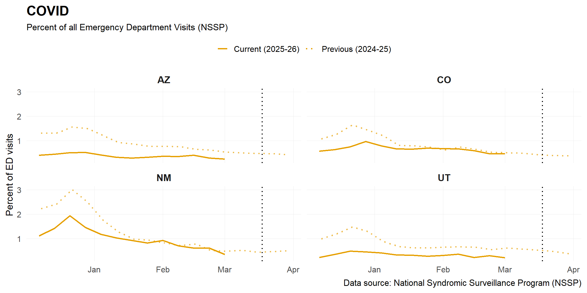
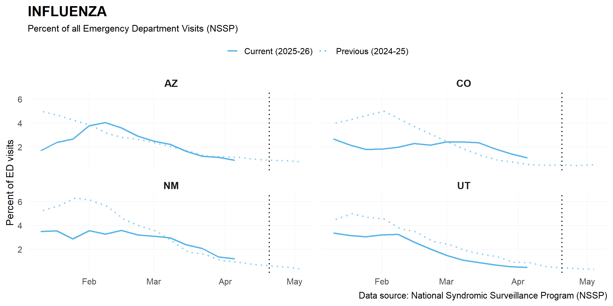
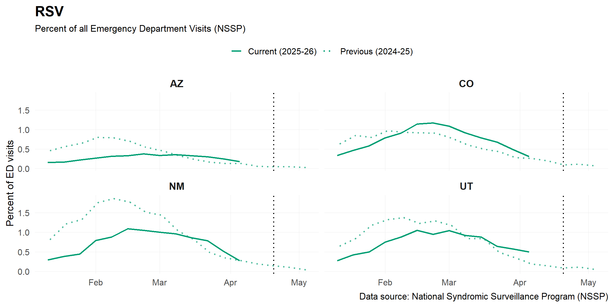

This figure shows the state-level trends in the impact of respiratory
virus activity on emergency department (ED) visits based on National
Syndromic Surveillance Program (NSSP) data. The broad coverage of this
emergency department sample helps to provide reasonable estimates of how
much symptomatic illness each virus is causing in each state. The
percentage of visits for each disease out of all ED visits is shown to
allow comparability across time and across states despite different
overall ED visit volume. Data from the previous season, represented with
dotted lines, are also shown for comparison. The dashed black vertical
line represents the current report date, but the most updated available
data may not be as recent.
Forecasts:
Forecasts are
not yet available for emergency department visits.